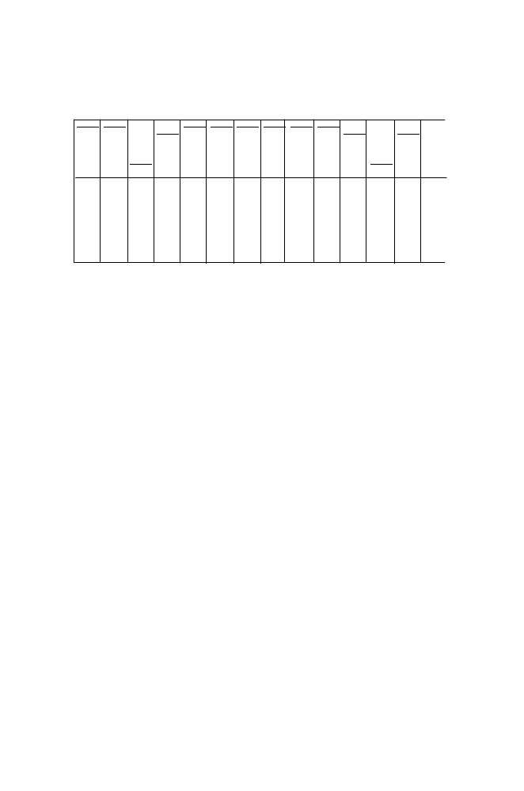

60
2 Words
M A L T K A E M S E Y L F ...
ATG GCG CTT ACA AAA GCT GAA ATG TCA GAA TAT CTG TTT ...
1.000 0.469 0.018 0.451 0.798 0.469 0.794 1.000 0.428 0.794 0.193 0.018 0.228
0.057 0.018 0.468 0.202 0.057 0.206 0.319 0.206 0.807 0.018 0.772
0.275 0.038 0.035 0.275 0.033
0.038
0.199 0.033 0.046 0.199 0.007
0.033
0.007 0.037
0.007
0.888 0.176
0.888
ATG GCT TTA ACT AAA GCT GAA ATG TCT GAA TAT TTA TTT
GCC TTG ACC AAG GCC GAG TCC GAG TAC TTG TTC
GCA CTT ACA GCA TCA CTT
GCG CTC ACG GCG TCG CTC
CTA AGT CTA
CTG AGC CTG
Fig. 2.2.
Example of codon usage patterns in
E. coli
for computation of the codon
adaptation index of a gene. The probability for the most frequently used codon in
highly expressed genes is underlined.
possible dinucleotide states for
t
−
1 and
t
) and four columns (corresponding
to the possible states at position
t
+ 1). We do not explore this further here.
2.8 Larger Words
The number and distributions of
k
-tuples,
k >
3, can have practical and
biological significance. Some particularly important
k
-tuples correspond to
k
= 4
,
5
,
6, or 8. These include recognition sites for restriction endonucleases
(e.g., 5
-
AGCT
-3
is the recognition sequence for endonuclease
Alu
I, 5
-
GAATTC
-
3
is the recognition sequence for
Eco
RI, and 5
-
GCGGCCGC
-3
is the recog-
nition sequence for
Not
I). The distribution of these
k
-tuples throughout the
genome will determine the distribution of restriction endonuclease digest frag-
ments (“restriction fragments”). These distributions are discussed in Chap-
ter 3. There are also particular words (e.g., Chi sequences 5
-
GCTGGTGG
-3
in
E.
coli
,
k
= 8) that may be significantly over-represented in particular genomes
or on one or the other strands of the genome. For example, Chi appears 761
times in the
E. coli
chromosome compared with approximately 70 instances
predicted using base frequencies under the iid model. Moreover, Chi sequences
are more abundant on the leading strand than on the
lagging strand
. These
observations relate in part to the involvement of Chi sequences in general-
ized recombination. Another example is the uptake sequences that function
in bacterial transformation (e.g., 5
-
GCCGTCTGAA
-3
in
Neisseria gonorrhoeae
,
k
= 10). Other examples of over-represented
k
-tuples can be found in the re-
view by Karlin et al. (1998). Some sequences may be under-represented. For
example, 5
-
CATG
-3
occurs in the
E. coli
K-12 chromosome at about 1/20 of
the expected frequency.